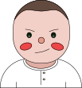

I've worked with startups, enterprises, and everything in between. Providing services such as visual design, user experience, and product strategy. Due to my background in graphic design I love projects that challenge my expertise in craft and design thinking.
Outside of work I study life drawing and sculpture, pursue illustration and iconography, learn about local history, play video games, and argue with Lenny (my cat).
@imtommyroberts or imtommyroberts@gmail.com to see my work or chat.
Grub
Resources
